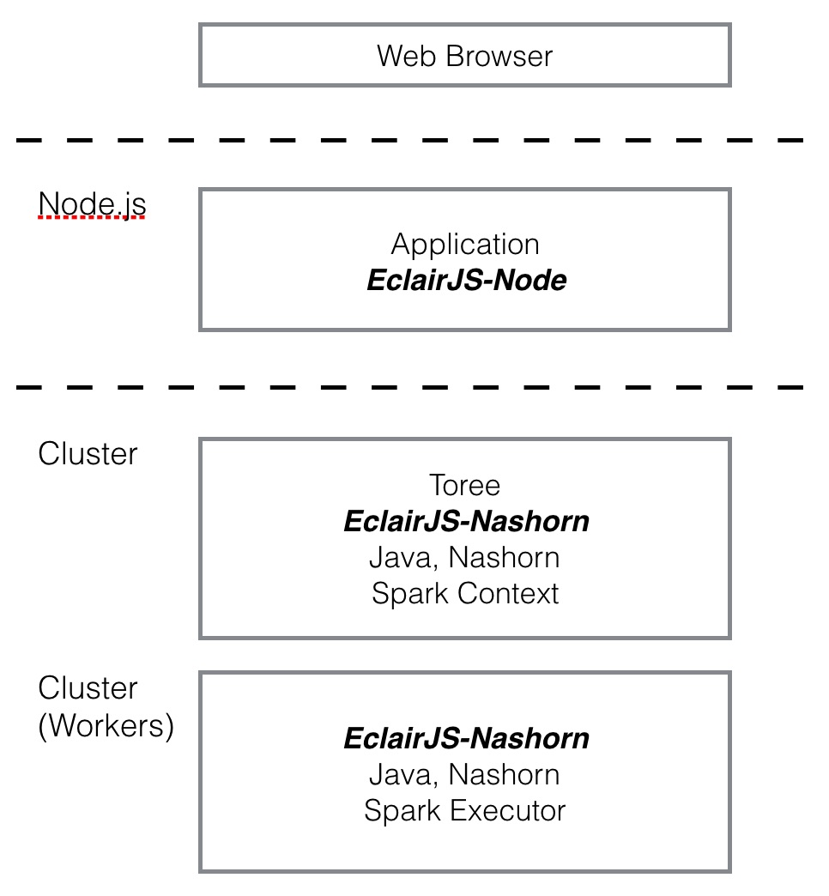

Welcome to EclairJS
This automatic page generator is the easiest way to create beautiful pages for all of your projects. Author your page content here using GitHub Flavored Markdown, select a template crafted by a designer, and publish. After your page is generated, you can check out the new gh-pages branch locally. If you’re using GitHub Desktop, simply sync your repository and you’ll see the new branch.

EclairJS-Node
Enables Node.js and JavaScript developers to program against Apache Spark. It provides an API in Node.js for Spark and a remote client for node applications. EclairJS-Node depends on the EclairJS-Nashorn component.
EclairJS-Nashorn
Exposes the Apache Spark programming model to JavaScript. It provides support for JavaScript in Spark and a framework supporting EclairJS-Node, a REPL, and Jupyter Notebooks.